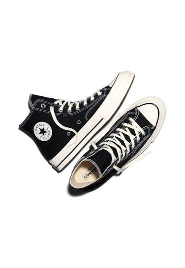
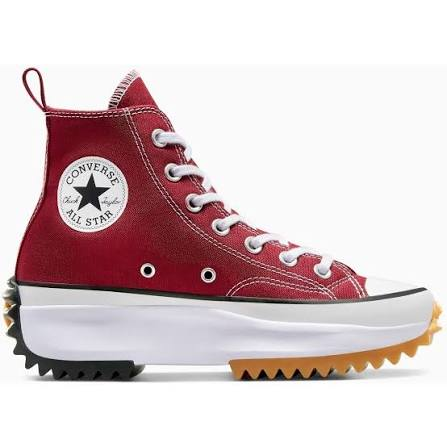
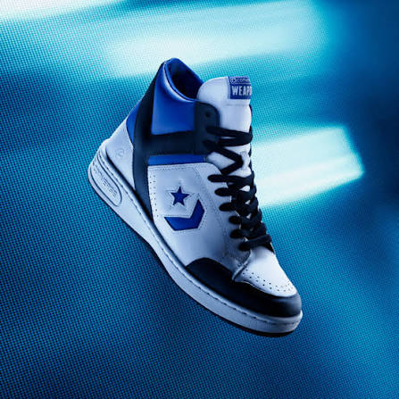

Click on the swoosh to return
Shoes are boring. Wear Sneakers

The Converse Chuck Taylor All Star Cruise is taking over the streets for its bold, chunky platform look and iconic skate-culture design! This shoe is highly popular for completely reinventing underfoot comfort. It swaps out the traditionally flat Converse sole for an ultra-lightweight, injected-foam midsole and OrthoLite cushioning that makes walking a breeze. Fans love the distinct 90s skater vibe, featuring thick laces and premium canvas-and-suede panels. It gives you the classic high-top style you love, but with elevated height and all-day comfort.

The Converse Run Star Hike is a global street style favorite, instantly recognizable for its bold, high-fashion chunky platform and dramatic jagged rubber soles! This silhouette is celebrated for effortlessly blending classic Chuck Taylor canvas with a futuristic, high-contrast hiking boot aesthetic. It has captured the youth fashion scene because the elevated platform adds immediate height while the split-color traction teeth on the heel and toe deliver an unmistakable edge. Combined with a plush OrthoLite insole, it provides the rugged style of a boot with the lightweight comfort of a sneaker. It’s the ultimate statement piece for anyone looking to stand out.

Deeply rooted in basketball heritage, the Converse Weapon is famous for dominating the 1980s NBA courts on the feet of rivals Magic Johnson and Larry Bird! This high-top classic is highly popular today as a premium retro streetwear staple, celebrated for its vintage aesthetic and distinct "Y-Bar" ankle support system. Sneakerheads and youth style creators love its heavy-paneled leather construction and throwback colorways that bring an authentic '80s varsity vibe to any outfit. It's the ultimate choice for a classic court look rebuilt for modern street style. Step into genuine hoops history.